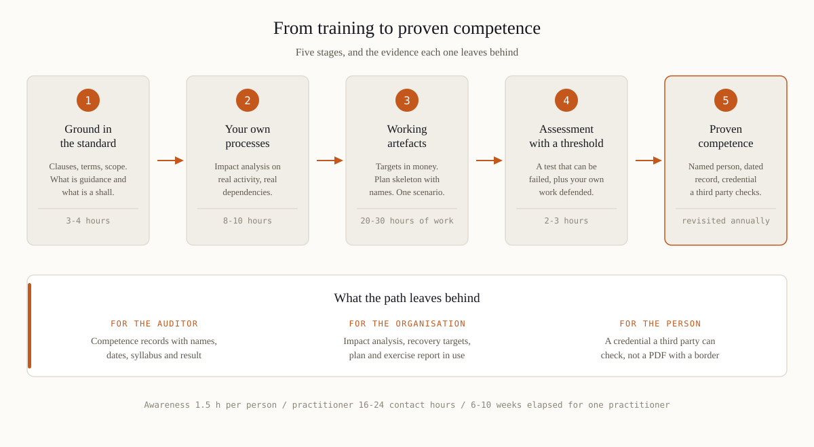

Organisations usually discover their training gap in the same place. AE/SCNS/NCEMA 7000:2021 requires the organisation to determine what competence the people running continuity need, to make sure they have it, and to keep documented evidence that it exists; the clause structure behind that requirement is set out on our page about the standard itself. The plans are there, the recovery targets look defensible, and then the question lands: who wrote them, what were those people trained on, and where is the record? Nobody can produce a syllabus, a date or a result. A missing training line does not sink an assessment on its own, but it weakens every other answer, because a management system nobody was taught to run is a document set with ambitions. That is why NCEMA 7000 training is bought as evidence, not as an event.
Buying one course for everybody is the most reliable way to waste a training budget: three populations need three different products. Awareness — everyone named in a plan or a call tree: 60 to 90 minutes, once a year, with three objectives only, recognise the trigger, know who is authorised to declare, know where the current plan lives. Practitioner — the continuity lead, process owners, IT recovery, department coordinators: 16 to 24 contact hours spread across three to six weeks, because the work done between the sessions is the course. Executive — the board, the executive committee, the audit committee: two to three hours, aimed at approving an appetite for disruption, understanding what the maximum tolerable period of disruption actually costs, and asking the three questions that change a plan. A fourth group is growing quickly: supplier teams assembling continuity evidence for government tenders, who need the practitioner track compressed and pointed at the evidence pack.
A syllabus is easy to judge once you know what has to be in it. Six components separate a working course from a reading of the standard.

Five questions, asked before the purchase order, sort providers quickly.
Three claims deserve open scepticism. A one-day "certification" — competence in a management system cannot be assessed in six hours. A certificate issued before any work has been submitted. And any suggestion that a commercial course is accredited by the authority: NCEMA publishes the standard free of charge and its compliance programmes look at organisations, not at course vendors, so verify such a claim at source before it enters your evidence file.
Set the clock honestly. Awareness costs about an hour and a half per person per year. A practitioner needs 16 to 24 contact hours, plus 20 to 30 hours of their own work to produce artefacts that survive review, plus the assessment itself — six to ten weeks of elapsed time for one person doing this alongside a full job. Compare that with the organisation's own timeline, where a mid-size company runs three to six months from gap assessment to audit-ready. The two schedules only work together if the training runs ahead of the implementation, otherwise the impact analysis gets done twice and the first version was the expensive one. This is the sequence the ERGP programme was built around — six modules, an artefact at the end of each, and a capstone defended before an examiner, in Arabic as well as English. Whichever route you take, insist on the same shape: teach, apply, produce, assess, record.
If the only thing left after the course is a PDF with a decorative border, the organisation bought attendance. The next audit will ask for competence — a different purchase.
ERGP is the executive route through this sequence — the first resilience governance certification fully available in Arabic, also in English. Six modules, six working artefacts, a capstone defended before an examiner and a verifiable certificate.
Explore the ERGP programme